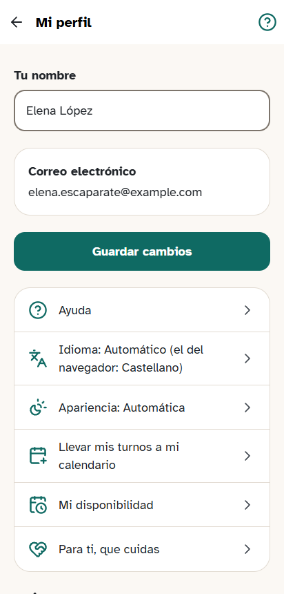

Tu perfil
Tu cuenta, igual en todos tus círculos.

Tus ajustes
Tu nombre, los avisos, tu color, el idioma, la apariencia (clara u oscura), la voz y el resumen semanal.
Para ti, que cuidas
Solo para: coordinación, quien cuida
En el Perfil, «Para ti, que cuidas» junta lo que es para ti: «Cómo estoy yo» y «Tus derechos como cuidador o cuidadora».
La guía explica la ayuda por cuidar en casa, cómo cotizar a la Seguridad Social sin pagar, los permisos del trabajo, la prestación por hijos con cáncer u otra enfermedad grave y el IRPF. Elige tu provincia para ver quién lo gestiona en tu comunidad.
También explica el respiro: centros de día, estancias temporales en residencia y el programa de respiro de tu comunidad.
Pedir un respiro
Solo para: coordinación, quien cuida
Si «Cómo estoy yo» lleva semanas mal, la tarjeta de apoyo te ofrece «Pedir un respiro». Eliges qué turnos de las próximas 2 semanas quieres que te cubran.
La coordinación recibe que necesitas un respiro, pero no cómo estás: tus respuestas solo las ves tú.
Cuánto he cuidado
Solo para: coordinación, quien cuida
En «Para ti, que cuidas», arriba, ves cuántas horas has cuidado este mes. Pulsa para verlo por periodos (este mes, mes pasado, últimos 12 meses) y por círculo.
Cuentan tus turnos ya hechos: visitas, tareas, llevar y recoger y acompañar a citas. Si marcaste «He llegado» y «Me voy», el tiempo real. Solo lo ves tú.
Aprender a cuidar
Solo para: coordinación, quien cuida
En «Para ti, que cuidas», «Aprender a cuidar» tiene fichas cortas de guías oficiales: movilizar sin hacerte daño, prevenir las llagas, atragantamiento, caídas en casa, higiene en la cama y dar la medicación.
Cada ficha dice cuándo pedir ayuda y enlaza la guía oficial completa. También se llega desde un medicamento («Cómo dar la medicación») y desde el diario al marcar una caída o dolor.
Es información general: no sustituye a tu enfermera ni a tu médico.
Dar las gracias
Debajo de un turno hecho, una nota del diario, un recado hecho o una nota del relevo de otra persona sale «Dar las gracias». A quien lo hizo le llega un aviso y, junto a esa cosa, sale «Gracias de…» para quien ya podía verla. No hay contadores ni rankings.
Si te equivocas, pulsa «Has dado las gracias · Deshacer».
Los que recibes salen en «Para ti, que cuidas», en «Gracias que has recibido» (últimos 30 días; solo los ves tú). Con premium, la persona cuidada también puede dar las gracias desde su móvil a quien ha venido ese día.
Registro de cuidados (PDF)
✦ Premium · Solo para: coordinación, quien cuida
En «Cuánto he cuidado», pulsa «Descargar el registro de cuidados (PDF)». Eliges el periodo y si va el nombre de la persona cuidada, y te da un PDF con tus turnos y el total de horas, por ejemplo para la empresa.
No es un certificado oficial: es un registro tuyo. Lleva un código para que quien lo reciba compruebe en tutelia.app/verificar que no se ha cambiado. Solo entran los círculos premium.
Accesibilidad
Solo en el móvil
Tutelia funciona con el lector de pantalla del móvil (TalkBack o VoiceOver) y con una línea braille conectada a él. Respeta el tamaño de letra que tengas puesto.
En «Apariencia» puedes elegir colores claros u oscuros, «Más contraste» y «Texto en negrita». Si tu móvil ya tiene el alto contraste o la negrita puestos, Tutelia los usa sola.
El botón «Escuchar» lee en voz alta el prospecto, los mensajes y otros textos.
Accesibilidad
Solo en el ordenador
Tutelia se usa con el teclado (Tab para avanzar, Intro para pulsar) y con lectores de pantalla como NVDA, JAWS o VoiceOver. Al principio de cada pantalla hay un enlace «Saltar al contenido».
En «Apariencia» puedes agrandar la letra (hasta el doble), elegir colores claros u oscuros, «Más contraste» y «Texto en negrita».
El botón «Escuchar» lee en voz alta el prospecto, los mensajes y otros textos con la voz del ordenador.
Leer un papel en voz alta
Solo en el móvil
En el Perfil y en Salud, «Leer un papel en voz alta» hace una foto de un informe, una carta o una receta y lo lee con la voz del móvil.
El texto se reconoce en el móvil y la foto no se guarda. Con el lector de pantalla, el móvil vibra distinto si algo sale bien (una vez), mal (tres veces) o pide atención (una vez larga).
Seguridad
Solo en el móvil
Puedes bloquear la app con tu huella y entrar con ella sin escribir la contraseña.
Verificación en dos pasos
Opcional. En «Seguridad», «Activar la verificación en dos pasos» hace que al entrar, además de la contraseña, escribas un código de una app de tu móvil (Google Authenticator, Microsoft Authenticator…). Así, aunque alguien sepa tu contraseña, no puede entrar.
Al activarla te damos 10 códigos de respaldo: guárdalos. Si pierdes el móvil, al entrar pulsa «He perdido el móvil: usar un código de respaldo» y escribe uno: se quita la verificación y puedes volver a activarla.
Cerrar la sesión en todos
En «Seguridad», «Cerrar la sesión en todos mis dispositivos» te saca de todos tus móviles y ordenadores, también del que usas. Hazlo si pierdes un móvil o entraste en un ordenador que no es tuyo: esos móviles dejan de recibir avisos.
Tus datos
Descarga tus datos o los del círculo, o borra tu cuenta, desde «Tus datos». Si escribes en «Contacto y sugerencias», te contestamos por correo.
¿Aún no usas Tutelia?
Es gratis para organizar el día a día entre varias personas. Así se empieza.